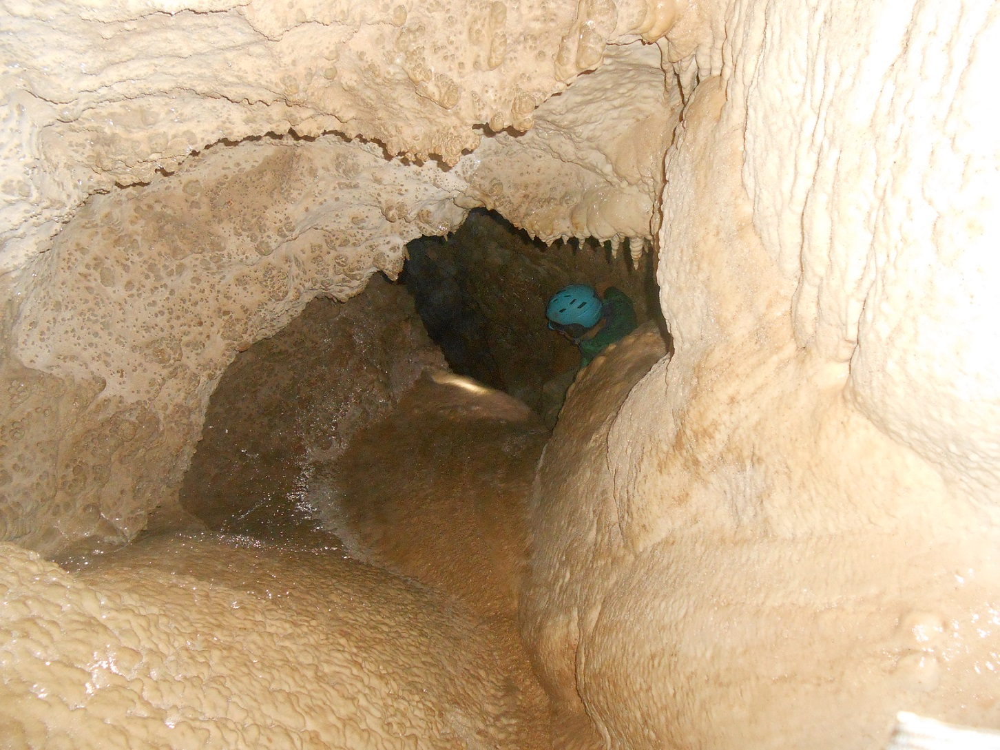
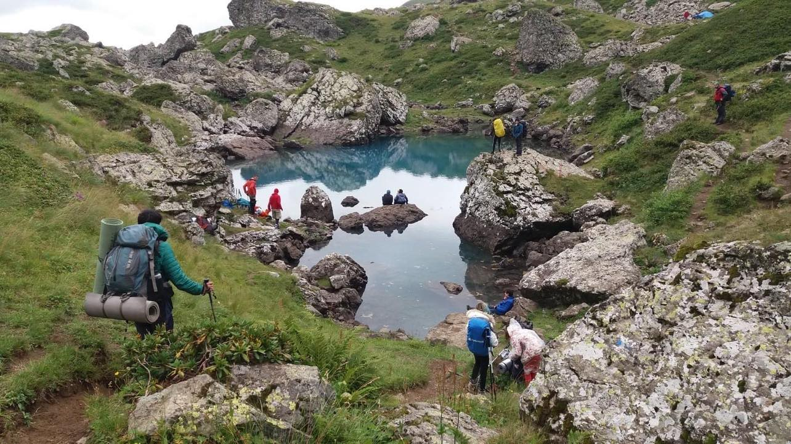

Hi my name is Irakli dzaganishvili and this is my "resume" website. Basically it's a website where I show off some stuff that I can do (for example the website itself) and some activites that I am interested in.
On this page you will find activites that I've done and hobbies that I have (for example hiking or diving)
This is one of my oldest hobbies that I have. Since childhood Ive been to some amazing places and met some amazing people in this endeavor of mine. I mostly hike with my aunt and her "adventuring group" or a professional hiking team, but I sometimes also go out with my own friends and even though our trips aren't usually as grand and unpredictable as with the senior groups we still usually have a lot of fun. Here I will showcase two of my more recent, longer and harder trips that were done with the more experienced groups.

This image was taken deep underground during a cave exploring trip in august of 2022 and the guy in the photo is me. It was an 8 day expedition in Racha during which we explored several caves some spanning several kilometers, for example one named "Morada". All of the caves explored are only ever visited by locals or professionals so they aren't popular among tourists (you won't find the cave if you google "Morada").

This was a one week trip in [] with a group of professional hikers and kids like myself. The guy in the green coat is me. This trip was supposed not to be too difficult, however the weather turned out to be much worse than we anticipated. For example when we were just about to descend from a steep peak in the afternoon to get to our camping location, heavy fog fell and it started raining. With the fog being so thick that you couldn't see your stretched out hand and the rain making the cliffs slippery, we couldn't get to our camping spot near the lake on the image and had to sleep on the cliff where we couldn't deploy half of our camps and were running out of water. Fortunately the fog cleared the next day and we were able to make it to the lake to refill our water supply and continued with our journey.
test
test
I originally got in to programing by my father's recommendation and started learning c++. With time I got more and more interested in the failed of web development and now making websites is what I am best at. I still know a bit of c++ but mostly code in HTML (The base of every website. You add every other language to HTML), CSS (For making websites look good) and JavaScript (For adding functionality to your website like working buttons and more). I also know a little bit of PHP (I use it for SQL databases. Basically if I wanted to make a log in page for my website I would use PHP) and Java (I only ever used it for developing spigot plugins for a game so I am not very good at it).
Note: This website and everything on it was made entirely by me so if you are interested in my web development skills, feel free to look around :D